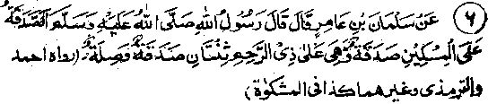

Chapter Three · Section (d): Ahadith concerning maintenance of kinship
5. Sadaqah to relatives serves two purposes

Hadith 6
Rasulullah Sallallaho alaihe wasallam has said, "A Sadaqah given to a poor man is merely Sadaqah, but when it is given to a relative, it serves two purposes: it is both a Sadaqah and an extra act of kindness for kinship''.
Note: While giving Sadaqah, the poor relatives should be given preference over the poor ones among the common people, as it is more virtuous to spend on one’s kinsmen. This is the subject of many a Tradition, and it has been treated in the Ahadith in various ways. Rasulullah Sallallaho alaihe Wasallam said, "Of the (four) Dinaars, a Dinaar you contribute in the path of Allah, a Dinaar spent to set free a slave, a Dinaar given as Sadaqah to a poor man and a Dinaar spent to provide for your family - the one spent to support your family will bring the greatest reward, provided it is spent solely for the pleasure pf Allah Ta'ala and they need help". It has been narrated in another Hadith that once, when Maimunah Radhiallaho anha set free a slave-girl, Rasulullah Sallallaho alaihe wasallam said, "It would have given you greater reward if you had given her to your maternal uncle". Once Rasulullah Sallallaho alaihe wasallam specifically exhorted women to give Sadaqah. After listening to the exhortation, Zainab returned to her husband Abdullah Ibne Mas'ood, an eminent Sahabi and a great Faqeeh, and said to him, "Rasulullah Sallallaho alaihe wasallam has commanded us to give Sadaqah and you are financially weak; so go and ask him if my spending on you wifi count as Sadaqah. Abdullah Ibne Mas'ood Radhiallaho anho told her that she had better go and ask it herself. (Possibly he felt shy to ask the question himself or might have thought it would appear selfish of him to ask such a question). So she went to Rasulullah Sallallaho alaihe wasallam and found a woman standing at his door, Who had come for the same purpose, but they date not ask him, Meanwhile Bilal Radhiallaho anho came out, so they said to him, "Go to Rasulullah Sallallaho alaihe wasallam and tell him that there are two women at the, door who have come to ask whether it Would count as Sadaqah if they gave something to their husbands and to the orphans, who are in their charge, from among the children of their late husbands'. Bilal Radhiallaho anho went in and conveyed the message to Rasulullah Sallallaho alaihe wasallam, who asked him who the women were, whereupon Bilal told him that there was a woman from the Ansar and Zainab, the wife of Abdullah bin Mas'ood. Rasulullah Sallallaho alaihe wasallam then said, "Yes; and they will get two rewards: one for the kinship and the other for Sadaqah". (Mishkaat).
Ali Radhiallaho anho says, "I would love to help my brother with a Dirham rather than spend twenty Dirhams on another person. I would rather help him (a brother) with a hundred Dirhams than set free a slave". (Ihya). It occurs in another Hadith that (while spending money) the first preference should be given to one’s own needs; if the money exceeds one’s needs, it should be spent on one’s family; if there is still something extra, it should be spent on other relatives; and if there is still some left, it should be distributed among other people. (Kanz). There are many other Ahadith on this subject related in Kanz-ul-Ummal and some other collections of Ahadith; but the Ahadith mean that, when spending money, a person can prefer his family above others only if he knows for certain that his family is more in need of help. But if others are in greater need of help or he himself, in spite of his need, has patience with perfect trust in Allah Ta'ala, it is highly commendable to prefer others’ needs to his own. We have already discussed this point in Chapter one under the Ayat" 28 beginning:
Ali Radhiallaho anho relates: "Shall I tell you an incident about myself and my wife, Fatimah Radhiallaho anha, the dearest and most loved daughter of Rasulullah Sallallaho alaihe wasallam , who lived with me in my house. She used to grind the corn herself so that calluses grew on the palms of. her hands; she fetched water for the house in a goatskin bag, the straps of which had left a mark on her body; she swept the house herself which soiled her clothes; she cooked the food so that her dress became black with smoke; In short, she did all the strenuous household jobs herself. Once some warcaptives were brought to Rasulullah Sallallaho alaihe wasallam and I asked her to go to him and ask him for a helper. She went to Rasulullah Sallallaho alaihe wasallam- but, as there were many people round him, she could not ask him for shyness. (A version has: She mentioned the matter to Aishah Radhiallaho anha and came back).Next day, Rasulullah Sallallaho alaihe wasallam visited us and said, "Fatimah, what did you want, to tell me yesterday?" She felt shy and kept quiet I told Rasulullah Sallallaho alaihe wasallam about her daily labours arid her having to fetch water, etc., and said that I had sent her. to ask for a servant Rasulullah Sallallaho alaihe wasallam said, ‘Let me suggest something that is better than a servant when you go to bed, say: () (Glory be to Allah) thirty-three times. (") (Praise be to Allah) thirty three timesand (.) (Allah is Great)thirty four times -That will be better for you thairi a servant". (Abu Dawood). Another version of the Hadith adds: Rasulullah Sallallaho alaihe wasallam said, "I cannot give you a servant at this time when the ‘Companions of the Suffah’ are suffering from pangs of hunger. I shall sell the slaves and spend the price on their requirements". (Fath-ul-Bari)